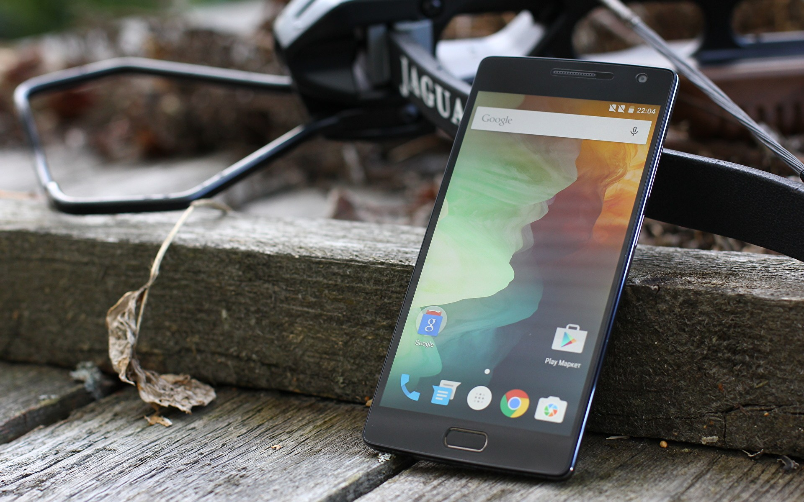

Лучшие Смартфоны В 2022 Году
Сегодня невозможно представить жизнь без смартфона – они нужны практически всем и для всего. Он поможет и сфотографировать интересный момент, и покажет дорогу до пункта назначения. С него можно далеко не только звонить – он открывает доступ к десяткам мессенджеров.
Смартфоны сегодня также поддерживают сотни самых разных игр, а на мощных моделях вы сможете играть в то, для чего раньше требовался геймерский ПК. На рынке представлены модели как стоимостью до десяти тысяч, так и около ста.
Ассортимент огромен, и не каждый может в нем ориентироваться. Потому мы и решили помочь нашим читателям, предоставив список из пяти лучших смартфонов на рынке.
Apple iPhone 12
Этот смартфон имеет новую операционную систему iOS 14. Он оснащен широким экраном диагональю в 6.1 дюймов. Экран выдает отличное разрешение – 2532 на 1170, что позволяет просмотр видео на большом разрешении. Двойная камера дает очень широкий угол обзора и разрешение в 12 мегапикселей. Процессор Apple A14 Bionic позволяет снимать видео в очень высоком разрешении и запускать десятки самых требовательных игр.
Модель имеет огромное ПЗУ на 128 гигабитов, а его мощный аккумулятор позволяет смартфону работать целый день беспрерывно. При умеренном использовании модель проживет и больше трех дней без зарядки. У телефона есть способность подключаться ко всем видам беспроводных сетей, в том числе и NFC. С весом в 164 грамм этот смартфон относится к самым легким.
Плюсы:
- Этот смартфон от Эппл самый новый, и многие покупают его уже из-за этого
- Модель лидирует почти по всем параметрам – у нее мощный процессор и хороший экран
- У смартфона очень хорошие камеры, позволяющие получить насыщенные снимки
Минусы:
- Единственный его минус – высокая цена
Samsung Galaxy Note 20
Это самый лучший смартфон на платформе Android. Самсунг уже почти всегда означает высокое качество, а эта модель еще и является самой новой и мощной из всех от Самсунг. Экран сравнительно крупный, с диагональю в 6.7 дюймов. Он выдает разрешение в 2400 на 1080 пикселей. Смартфон оснащен тремя мощными камерами с разрешением в 64 мегапикселя. Это позволяет создавать фото с отличным качеством. Процессор Qualcomm Snapdragon 865 Plus поддерживает даже самые тяжелые игры, а объем ПЗУ достигает 256 гигабайт. Этого хватит для всего. ОЗУ имеет объем в 8 ГБ, что ставит смартфон в один ряд с игровыми ПК. С аккумулятором 4300 мА⋅ч смартфон легко выдерживает два дня даже с максимальной нагрузкой. Весит смартфон почти 200 граммов, а его экран делает его по размеру больше некоторых планшетов.
Плюсы:
- Смартфон имеет очень большой экран и отлично подходит для игр и фильмов
- Модель оснащена самым мощным процессором среди смартфонов
- Батарея очень мощная, и хотя она прибавляет к весу, она дает очень долгий срок службы
Минусы:
- Смартфон поставляется с ассортиментом рекламных и ненужных программ
HONOR 10i
Эта модель, с диагональю экрана 6.2 дюйма, является одной из самых купных от этого бренда. Девайс оснащен тремя камерами на 24, 8 и 2 мегапикселя. Камеры выдают отличные фотографии, и многие пользователи отметили, что качество изображений отличное. Экран имеет разрешение на 2340х1080 пикселей. Это позволяет просматривать видео в высоком разрешении, а также делает смартфон очень эффективным в области игр. Процессор HiSilicon Kirin 710 способен работать с самыми требовательными приложениями и играми. Девайс поддерживает все виды беспроводной связи, в том числе и NFC. Объем ОЗУ у этого смартфона – 4 ГБ, чего с лихвой хватает для любых программ, а многие игры он потянет с легкостью. А 128 гигабайтов ПЗУ хватит даже самому изощренному фотографу или меломану. В телефон можно вставлять сразу две СИМ-карты. Аккумулятор на 3400 мАч позволяет телефону работать до двух дней, даже при активном использовании. При этом его вес – всего 164 грамма.
Плюсы:
- Смартфон имеет очень большой экран и отлично подходит для игр и фильмов
- Модель оснащена самым мощным процессором среди смартфонов
- Батарея очень мощная, и хотя она прибавляет к весу, она дает очень долгий срок службы
Минусы:
- Смартфон поставляется с ассортиментом рекламных и ненужных программ
Xiaomi Mi 10 Lite
Этот смартфон имеет очень крупный экран, и его диагональ составляет 6.6 дюймов. Это позволяет с легкостью просматривать на нем любое видео и игры. Экран имеет разрешение 2400 x 1080. Модель оснащена четырьмя камерами, одна из которых выдает 48 мегапикселей, а другие используются для широкоугольной и макро-съемки. Девайс способен использовать все виды беспроводного соединения, в том числе NFC и 5G. Поддерживается использование двух СИМ-карт. ПЗУ вмещает до 128 гигабайт, а 6 гигабайт ОЗУ позволяют смартфону потянуть даже требовательные игры. Процессор Qualcomm Snapdragon 765 относится к самым мощным. Аккумулятор выдает мощность в 4160 мАч. Аккумулятор поднимает вес смартфона до 192 грамм, и это делает его одной из самых объемных моделей в продаже.
Этот смартфон имеет очень крупный экран, и его диагональ составляет 6.6 дюймов. Это позволяет с легкостью просматривать на нем любое видео и игры. Экран имеет разрешение 2400 x 1080. Модель оснащена четырьмя камерами, одна из которых выдает 48 мегапикселей, а другие используются для широкоугольной и макро-съемки. Девайс способен использовать все виды беспроводного соединения, в том числе NFC и 5G. Поддерживается использование двух СИМ-карт. ПЗУ вмещает до 128 гигабайт, а 6 гигабайт ОЗУ позволяют смартфону потянуть даже требовательные игры. Процессор Qualcomm Snapdragon 765 относится к самым мощным. Аккумулятор выдает мощность в 4160 мАч. Аккумулятор поднимает вес смартфона до 192 грамм, и это делает его одной из самых объемных моделей в продаже.
Плюсы:
- Смартфон имеет сочетание мощного процессора и ОЗУ, позволяя использовать для гейминга
- Девайс имеет очень выгодную цену и прекрасное качество
- БЭкран по размеру уже ставит этот смартфон в один ряд с планшетами
Минусы:
- Нет слота для карты памяти
Huawei Y8P
У этого смартфона, работающего на ОС Android 10, имеются три мощные камеры, главная из которых выдает разрешение в 48 мегапикселей. Также есть широкоугольная камера. Экран имеет диагональ в 6.3 дюйма, и он выдает разрешение 2400 на 1080. Это позволяет просматривать видео в отличном разрешении. С процессором HiSilicon Kirin 710F вы сможете поиграть в самые требовательные игры без лагов и на максимальных настройках. Также 4 гигабайта ОЗУ позволят вам грузить требовательные приложения. 180 гигабайт памяти позволят снимать объемные видео и тысячи фото, а также вы можете расширить существующую память с помощью карты СД. Смартфон способен использовать все виды беспроводной связи кроме 5 G. Ему также доступен NFC.Аккумулятор объемом в 4000 мАч способен дать смартфону до двух дней непрерывной работы, даже при активном использовании.
Плюсы:
- Смартфон имеет сочетание мощного процессора и ОЗУ, позволяя использовать для гейминга
- Девайс имеет очень выгодную цену и прекрасное качество
- БЭкран по размеру уже ставит этот смартфон в один ряд с планшетами
Минусы:
- Нет слота для карты памяти